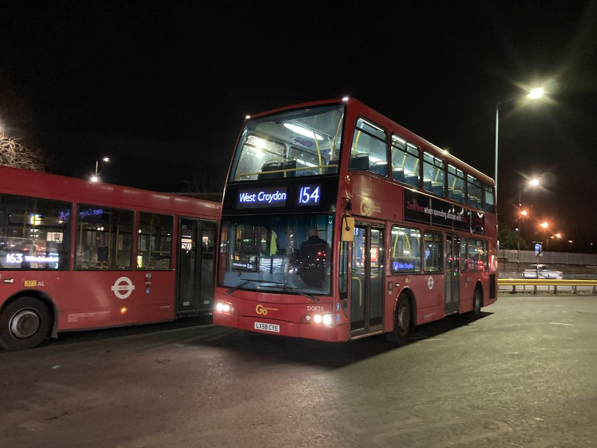

DOE35
| Number | DOE35 |
|---|---|
| Reg | LX58 CYE |
| Type | Dennis Trident 2 East Lancs Optare Olympus |
| New to | Go-Ahead London |
| New in | 2008 |
| Withdrawn/Preserved in | 2025 |
History
DOE35 was delivered to Go-Ahead London in 2008 for routes based out of Sutton garage. In 2017, she was repainted from the old Go-Ahead London livery into the standard TfL livery. She retired from London in July 2023 and moved to Go South Coast in September 2023, initially used by Salisbury Reds until December 2023, before moving to Bluestar until April 2024. Following this, she was stored on the Isle of Wight with Southern Vectis in the events fleet and used on Isle of Wight Festival shuttles in 2024 and 2025. After a failed attempt at preserving sister DOE15, the group contacted Go South Coast about preserving an ex-Go-Ahead London Olympus. After being given a selection, DOE35 was chosen. In June 2025, DOE35 was withdrawn and made available to purchase for us, and in November 2025 she officially entered preservation with the group.

Photo Credit: Sarah